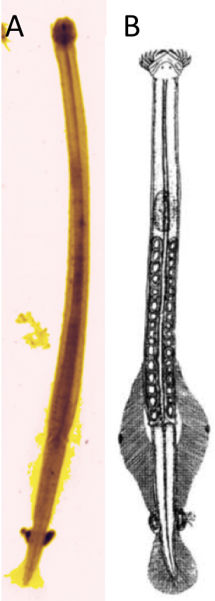
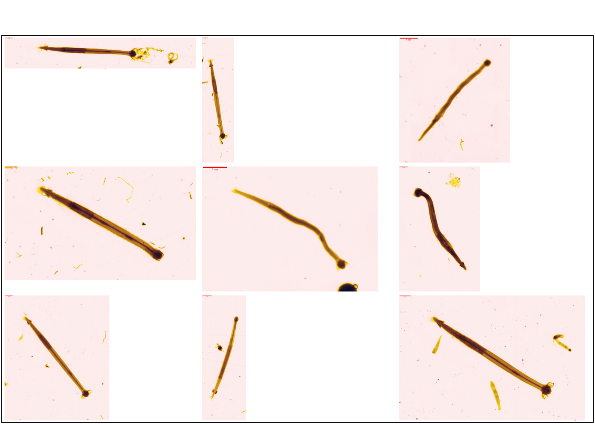
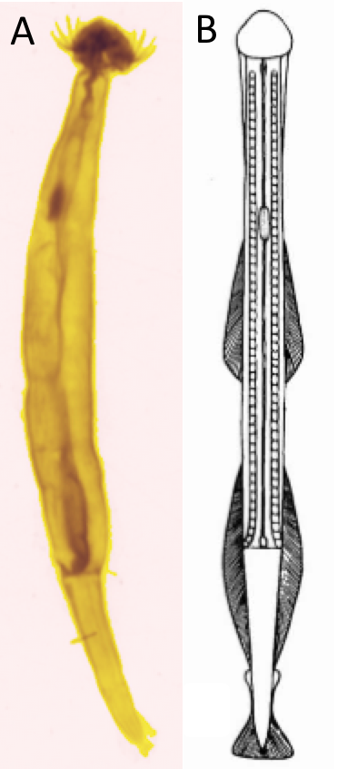
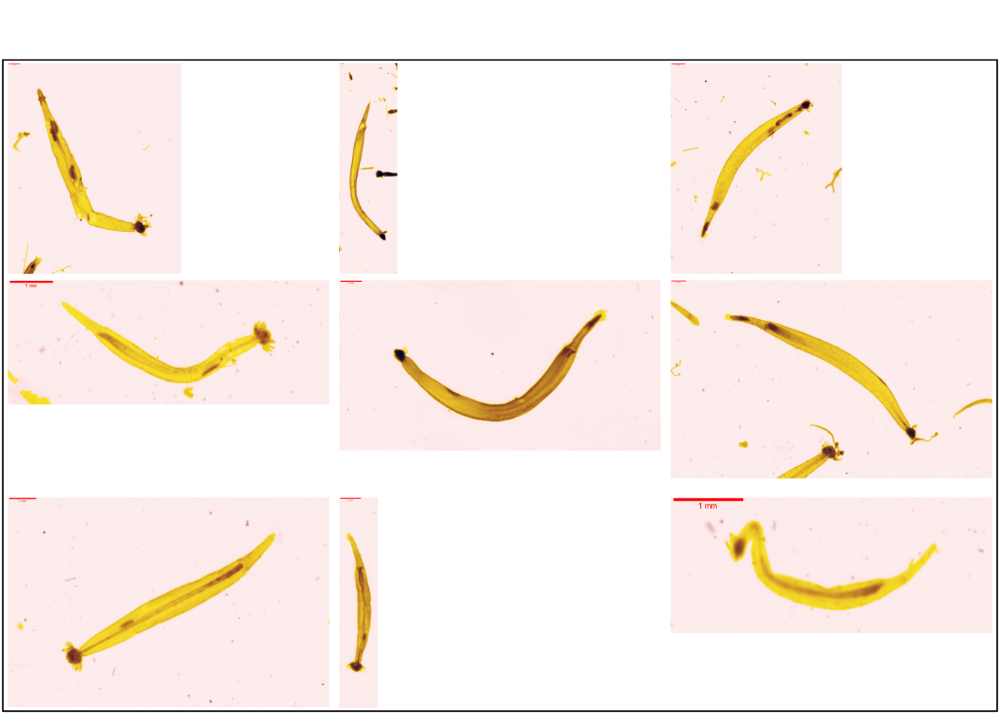
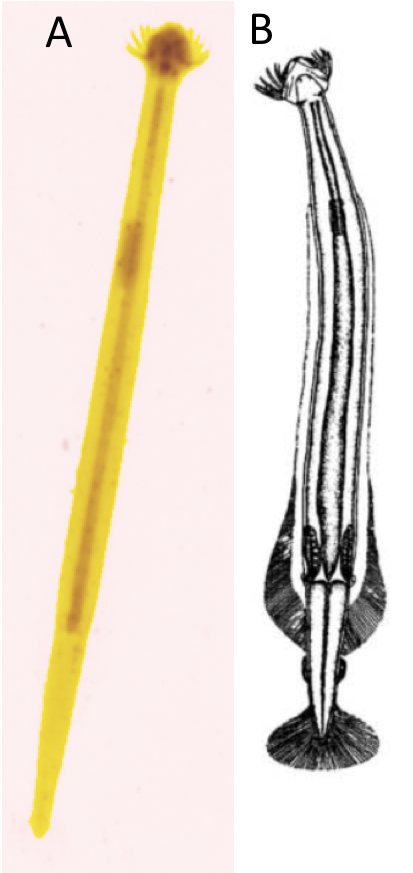
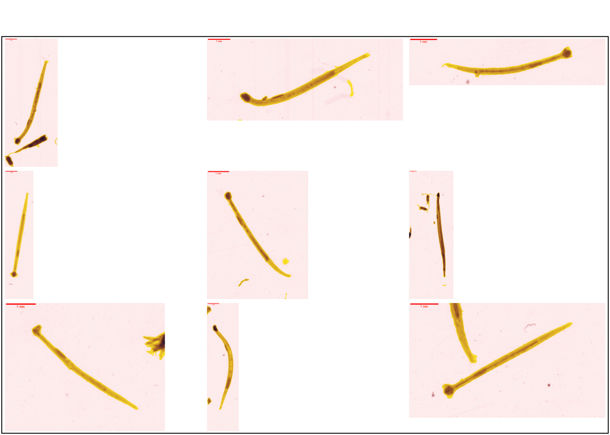

2 Chaetognatha
Les chaetognathes sont un phylum de protostomiens marins. Etant les principaux prédateurs de copépodes, ils ont un rôle écologique majeur dans les écosystèmes marins planctoniques. Ils jouent de ce fait un rôle important dans le transfert d’énergie depuis les copépodes vers les plus hauts niveaux trophiques, ils sont de plus les seconds organismes les plus abondants du zooplancton (Lee, Kim, et Park 2016). Ce sont des organismes vermiformes dont le corps est divisé en 3 segments (Quivy, Thomas 2018) :
Une tête portant des crochets caractéristiques de ces organismes
Un tronc
Une queue
Ce phylum contient la classe des Sagittoidea divisée en 2 ordres (Horton et al. 2022) :
Aphragmophora (5 familles)
Phragmophora (4 familles)
La littérature est assez pauvre quant aux caractères morphologiques permettant de distinguer les différentes familles de chaetognathes. La distinction se fait essentiellement à partir de différentes clés permettant de différencier les formes générales des différents segments des organismes.
Le principal critère de classification des chaetognathes est la position des nageoires ou ailerons. Malheureusement, il n’est pas possible de l’utiliser pour les vignettes car le traitement les a supprimés. L’identification des chaetognathes est donc préférables in vivo.
2.1 Aphragmophora
L’ordre des Aphragmophora est caractérisé par l’absence de musculature transverse et peu de structures glandulaires sur la surface du corps (Papillon et al. 2006). Deux familles sont identifiées dans les vignettes. Il s’agit des Krohnittidae et des Sagittidae.
2.1.1 Krohnittidae
La famille des Krohnittidae ( Figure 2.1 ) est caractérisée par une armature céphalique spécialisée avec crochets incurvés et dents lancéolées et une seule paire de nageoire latérale (Papillon et al. 2006).

La Figure 2.2 propose des vignettes supplémentaires.
plot_vignettes(vigns, group = "krohnittidae")
2.1.2 Sagittidae
La famille des Sagittidae (Figure 2.3) représente plus de 75% des chaetognathes. Elle est caractérisée par 2 paires de nageoires latérales, 2 sets de dents paires antérieures et postérieurs et un couronne de cils très allongés (Papillon et al. 2006).

La Figure 2.4 propose des vignettes supplémentaires.
plot_vignettes(vigns, group = "sagittidae")
2.2 Phragmophora
Les Phragmophora sont caractérisés par la présence d’une musculature transverse appélée phragme et la présence de structures glandulaires sur la surface du corps (Papillon et al. 2006).
Une seule famille de phragmophora est identifiée dans les vignettes, il s’agit de la famille des Eukrohniidae.
2.2.1 Eukrohniidae
La famille des Eukrohniidae ( ?fig-eukrohniidae ) est caractérisé par un segment de queue assez court, une paire de nageoires latérales ou de structures gélatineuses et des diverticules stomacaux généralement absents (Lee, Kim, et Park 2016).

La Figure 2.6 propose des vignettes supplémentaires.
plot_vignettes(vigns, group = "eukrohniidae")